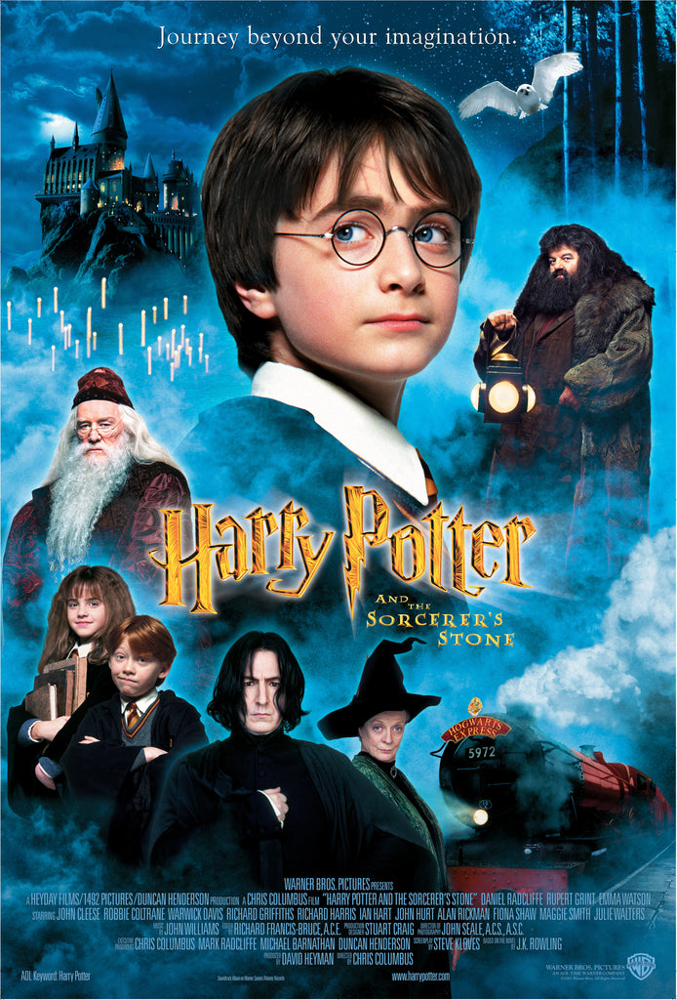
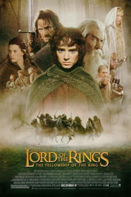
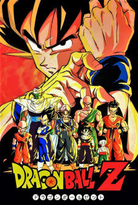
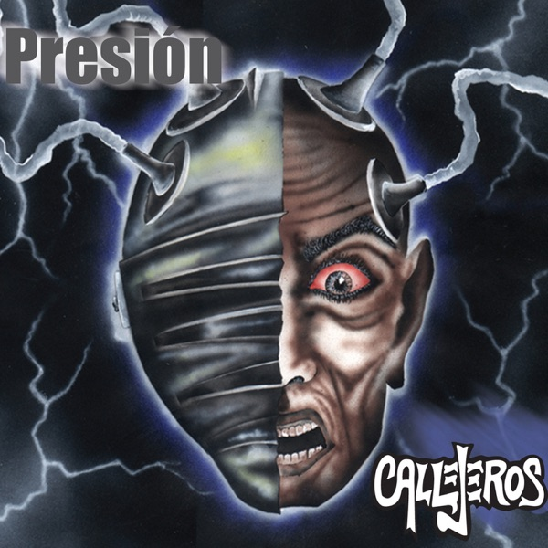
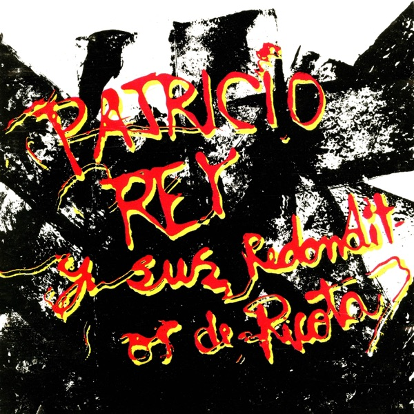
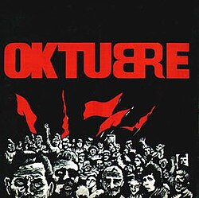
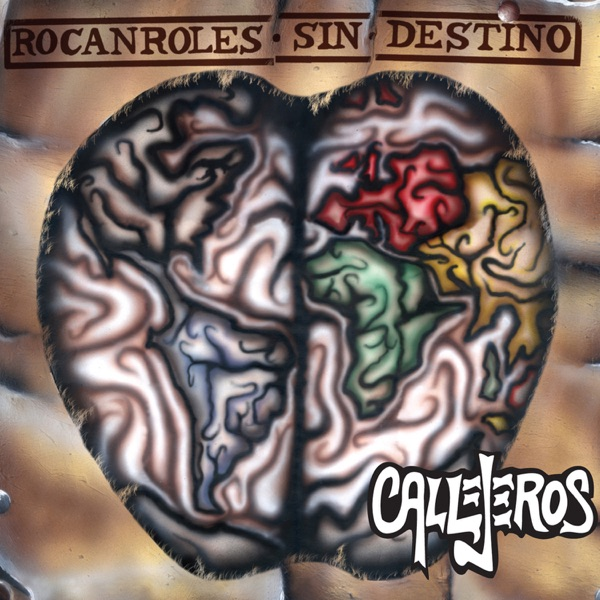
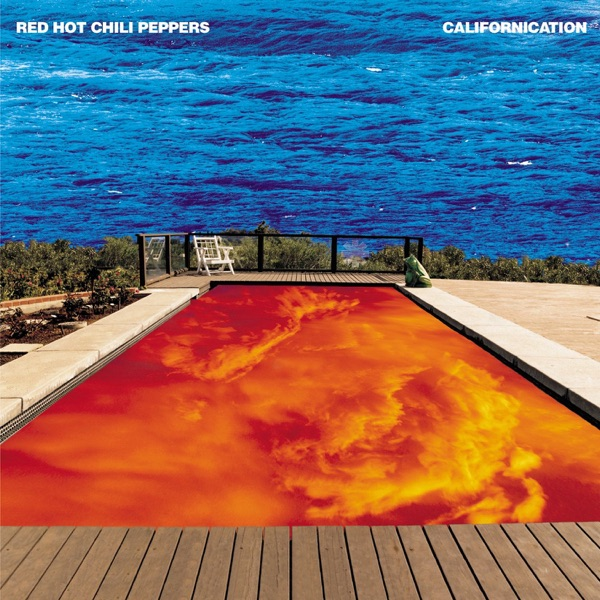

TráilerPERFIL 01
Sebastián Fernández
Buenos Aires
Desarrollador de software con 4 años de experiencia en la industria, actualmente trabajando con PHP, SQL y JavaScript sobre un sistema de certificación laboral. Estudio la Tecnicatura Superior en Desarrollo de Software en el IFTS N°29 y me interesa entender el proyecto completo: no solo el código, sino también los servidores, la seguridad y los costos que lo sostienen. Al equipo aporto experiencia real trabajando con Git, APIs REST y trabajo en equipo.
Habilidades
- HTML
- CSS
- JavaScript
- Trabajo en equipo
Películas favoritas

TráilerEl señor de los anillos

TráilerDragon Ball Z
Fullmetal Alchemist: Brotherhood
Jujutsu Kaisen
 Tráiler
Tráiler
Demon Slayer
Shingeki no Kyojin
Discos favoritos

EscucharCallejeros — Presión (2003)

EscucharLos Redondos — Gulp (1985)

EscucharLos Redondos — Oktubre (1986)

EscucharCallejeros — Rocanroles sin destino (2004)

EscucharRed Hot Chili Peppers — Californication (1999)
Tu próximo desafío aparecerá acá.